Выберите страницу с Номером задания
Шаблон на одну функцию
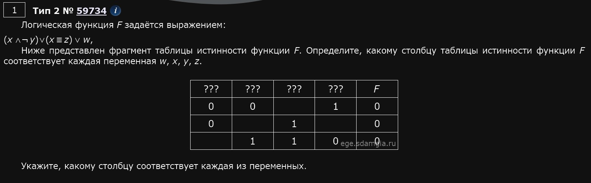
from itertools import product, permutations
def f(x,y,z,w):
return (x and (not y)) or (x == z) or w
for x1, x2, x3, x4 in product([0,1], repeat=4):
t=(
(0,0,x1,1,0),
(0,x2,1,x3,0),
(x4,1,1,0,0)
)
if len(t) == len(set(t)):
for p in permutations('xyzw', r=4):
if all(f(**dict(zip(p, line))) == line[-1] for line in t):
print(*p)
Пройтись по маскам
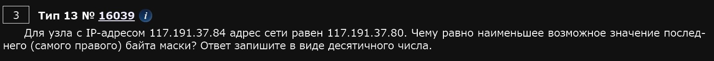
from ipaddress import *
for x in range(33):
net = ip_network(f'192.168.32.48/{x}', 0)
if str(net.network_address) == '192.168.24.0':
print(net.netmask)
Пройтись по узлам сети
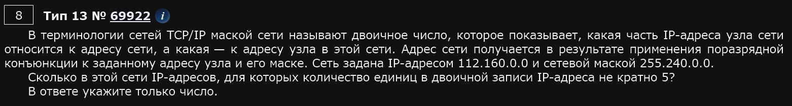
from ipaddress import *
net = ip_network('112.160.0.0/255.240.0.0', 0)
count = 0
for ip in net:
if f'{ip:b}'.count('1') % 5 != 0:
count += 1
print(count)
При любых переменных
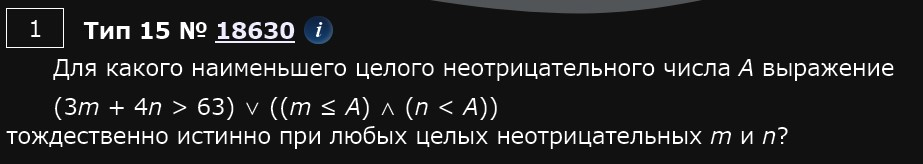
def f(m, n, a):
return (3 * m + 4 * n > 63) or ((m <= a) and (n < a))
print(min(A for A in range(0,200) if all(f(m, n, A) == 1 for n in range(200) for m in range(200))))
print(min(..)) если ищем минимальное или max(), если ищем максимальное.
На числовой прямой даны два отрезка
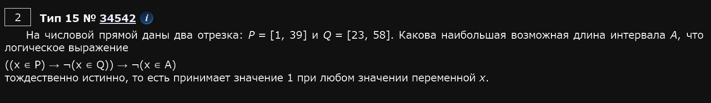
for x in [k * 0.25 for k in range(-1000, 1000)]:
P = 1 <= x <= 39
Q = 23 <= x <= 58
A = 1
f = (P <= (not Q)) <= (not A)
if f != 0:
print(x)
A = 1 если ищем наибольшее, = 0 если наименьшее.
f != 0 если ложь, != 1 если истина
Если обрыв, то это ответ.
Если разрыв, то объединение двух отрезков в один.
Обозначим поразрядную конъюнкцию
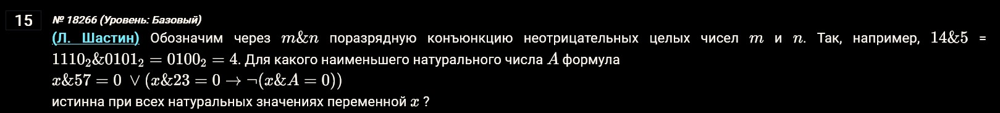
def f(x, a):
return (x & 57) == 0 or ((x & 23 == 0) <= (not ((x & a) == 0)))
print(min(a for a in range(1, 200) if all(f(x, a) for x in range(1, 2000))))
Все действия над числами записать в скобки!
range(0 или 1, 200) в зависимости от искомого числа - натурального или неотрицательного
Обозначим через ДЕЛ утверждение
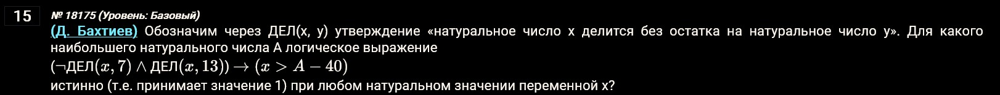
def d(x, a): return x % a == 0
def f(x, a):
return ((not d(x, 7)) and d(x, 13)) <= (x > (a - 40))
print(max(A for A in range(1,200) if all(f(x, A) == 1 for x in range(1, 200))))
Первая часть кода не меняется от задания 19 до 21, КРОМЕ тех случаев, когда в 19м кто-то выигрывает после неудачного хода противника. В таком случае пишем в последнем return .. else any(h), считаем 19й и потом обратно меняем, запоминая значение.
Простая основа
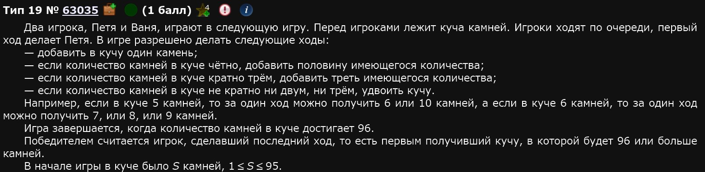
def f(s, m):
if s >= 33: return m % 2 == 0
if m == 0: return 0
h = [f(s + 1, m - 1), f(s + 3, m - 1), f(s * 2, m - 1)]
return any(h) if (m - 1) % 2 == 0 else all(h)
Меняются только строки 2 и 4 - во второй строке число и направление, в четвертой возможные шаги.
Решение 19, 20, 21
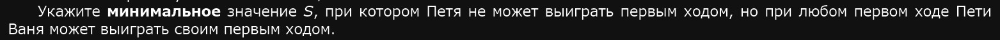
print('19)', [s for s in range(1, 33) if f(s, 2)])
В range() пишем возможные в задачи s. Далее в зависимости от того, кто должен закончить игру, пишем для него if (..). Если кто-то должен не закончить игру на каком-то ходе, то not if (..).
Для каждого номера прописываем свое решение через отдельные print().
Усложнённая основа
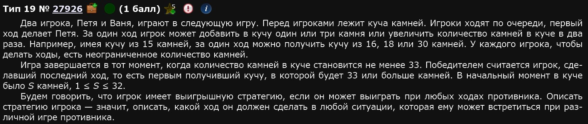
def f(s, m):
if s >= 96: return m % 2 == 0
if m == 0: return 0
h = [f(s + 1, m - 1)]
if s % 2 == 0:
h.append(f(s * 1.5, m - 1))
elif s % 3 == 0:
h.append(f(s + s / 3, m - 1))
else:
h.append(f(s * 2, m - 1))
return any(h) if (m - 1) % 2 == 0 else all(h)
Обычное возрастание аргумента
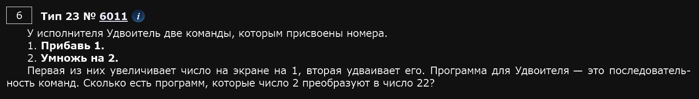
def f(x, end):
if x > end: return 0
if x == end: return 1
return f(x + 1, end) + f(x * 2, end)
print(f(2,22))
Содержит число + не содержит число
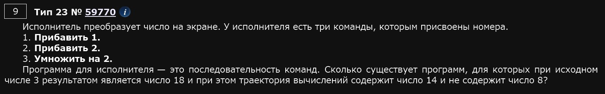
def f(x, end):
if x > end: return 0
if x == end: return 1
if x == 8: return 0
return f(x + 1, end) + f(x + 2, end) + f(x * 2, end)
print(f(3, 14) * f(14, 18))
Содержит число в тракетории значит, что мы идем до этого числа, а потом до конечного.
Не содержит число значит, что если мы встретим это число, то путей дальше нет, вернем 0.
Содержит 2 числа
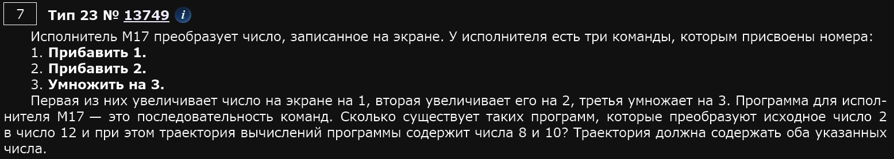
def f(x, end):
if x > end: return 0
if x == end: return 1
return f(x + 1, end) + f(x + 2, end) + f(x * 3, end)
print(f(2, 8) * f(8, 10) * f(10, 12))
Не содержит двух команд
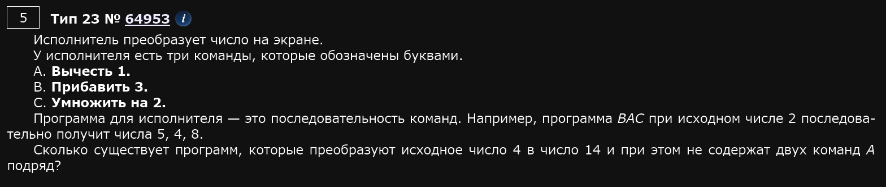
def f(x, end, c):
if x > end + 1: return 0
if x == end: return 1
return f(x + 3, end, 2) + f(x * 2, end, 3) + (f(x - 1, end, 1) if c != 1 else 0)
print(f(4, 14, 0))
При каждом шаге рекурсии запоминаем команду, чтобы проверить её позже.
Шаблон на простой номер
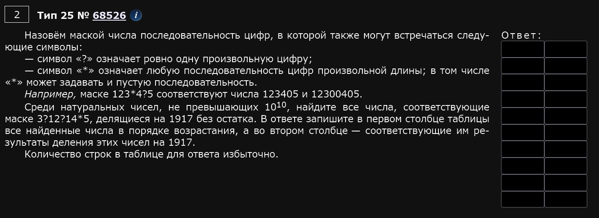
from fnmatch import fnmatch
for x in range(1917, 10 ** 10 + 1, 1917):
if fnmatch(str(x), '3?12?14*5'):
print(x, x // 1917)
range() и шаг по числу, которому должно быть кратно конечное число